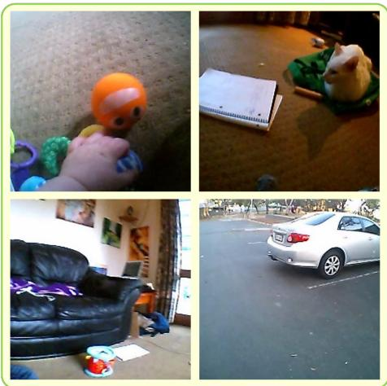

Visual SSL / representation · P0 · 2026-06-05
Continual Visual and Verbal Learning：它把自监督视觉表征、图文对比和 continual/streaming learning 放在同一框架，对视频预训练和真实世界长期学习很有启发
把视觉-语言表示学习从离线多 epoch shuffle 训练改成更接近真实经验的连续流式设定，测试模型能否从时间结构中学习词义与视觉表征。
编号2606.05115
优先级P0
类别Visual SSL / representation
会议arXiv
方法BabyCL 在 SAYCam 儿童视角视频上做单遍 chronological streaming learning，结合多阶段时间切分、视觉与多模态双 replay buffer，以及共享 backbone 上的三种 contrastive losses。
来源arXiv / OpenReview
先说结论。它把自监督视觉表征、图文对比和 continual/streaming learning 放在同一框架，对视频预训练和真实世界长期学习很有启发。 把视觉-语言表示学习从离线多 epoch shuffle 训练改成更接近真实经验的连续流式设定，测试模型能否从时间结构中学习词义与视觉表征。


核心问题
它把自监督视觉表征、图文对比和 continual/streaming learning 放在同一框架，对视频预训练和真实世界长期学习很有启发。
方法拆解
BabyCL 在 SAYCam 儿童视角视频上做单遍 chronological streaming learning，结合多阶段时间切分、视觉与多模态双 replay buffer，以及共享 backbone 上的三种 contrastive losses。
主要贡献
把视觉-语言表示学习从离线多 epoch shuffle 训练改成更接近真实经验的连续流式设定，测试模型能否从时间结构中学习词义与视觉表征。
实验看点
摘要称在匹配优化预算下，BabyCL 优于 streaming baselines，并显著缩小与离线训练上界的差距；ablation 显示时间窗口长度和 buffer eviction 规则下收益稳定。
局限与读法
数据来自儿童 egocentric 场景，规模和视觉分布与网页级预训练不同；需要看它在更广泛通用图像/视频数据上的迁移性。